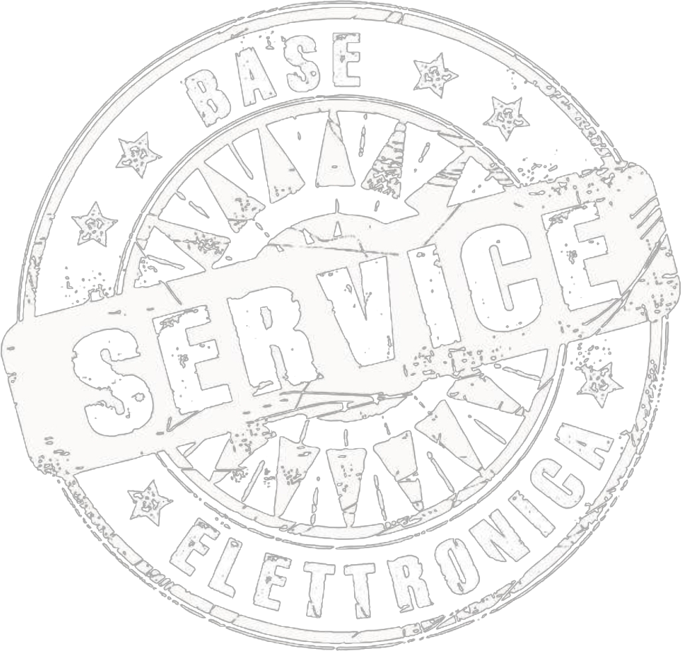

Ruota il telefono in verticale per vedere il sito

Chi siamo
I nostri servizi
Portfolio
Preventivi e Contatti
Service
Sicurezza Antincendio
Progettazione e Soluzioni su misura
Noleggio
Centro Assistenza Riparazioni
Torna al menu principale
Caricamento...